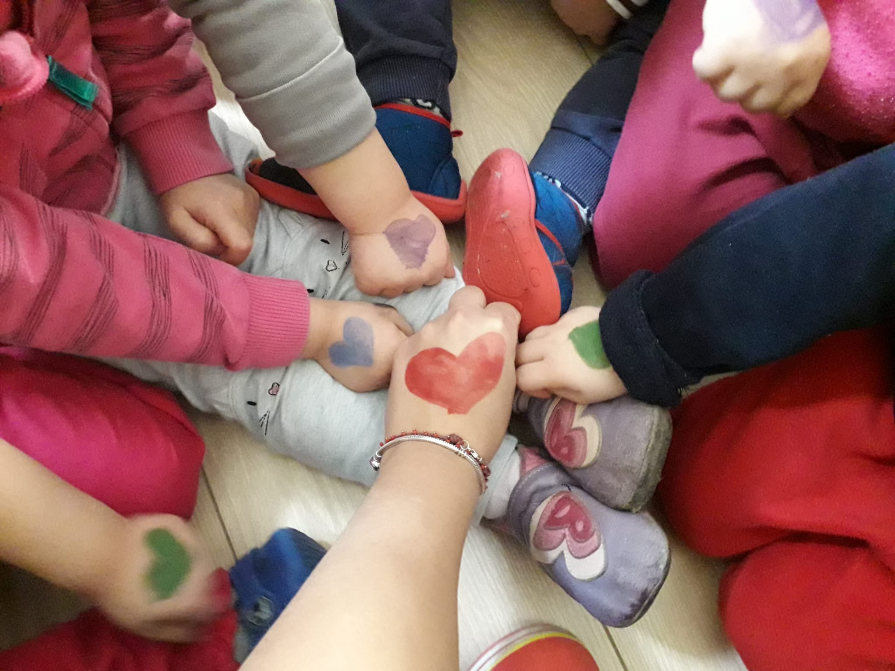

Galleria di vita al nido
Uno sguardo sulla quotidianità di lacasadipluto: giochi, letture, esplorazioni nel verde e piccoli grandi momenti condivisi.
Vita quotidiana
Attività all’aperto
Gite e uscite
Relazioni e affetto

Storie e racconti nella stanza dei giochi.

Atelier con materiali e giochi a portata di bambino.

Laboratori creativi e segni di affetto colorati.

Cerchio nel prato per attività e giochi in natura.

Relazioni fatte di abbracci e vicinanza.
Letture all’aperto su tappeti e coperte.
Gita allo zoo e scoperte insieme.
Passeggiate in sicurezza mano nella mano.
Piccoli gesti di cura tra bambini ed educatrici.